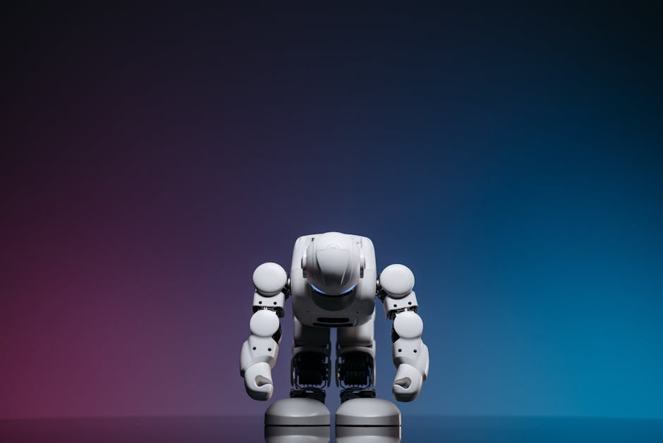

Imagine a world where robots aren't just factory machines, but helpful companions, intelligent assistants, and even life-savers. From self-driving cars navigating bustling Indian streets to AI-powered medical diagnostics improving healthcare access in remote villages, the future of robotics is incredibly exciting! But with great power comes great responsibility. As we stand on the cusp of this robotic revolution, it's crucial for all of us – especially young innovators like you – to understand not just how to build robots, but how to build them *responsibly* and *ethically*. Welcome to the fascinating world of Robot Ethics and Safety!
What Are Robot Ethics and Safety?
At its core, "Robot Ethics" is about asking the big questions: What is the right thing for a robot to do? What rules should guide its actions? And what responsibilities do humans have when designing, deploying, and interacting with these intelligent machines? It's about ensuring robots benefit humanity without causing harm or injustice.
"Robot Safety," on the other hand, deals with the practical aspects of preventing physical, psychological, or data-related harm from robots. This includes everything from making sure a robotic arm doesn't accidentally injure a human worker to protecting your personal data from a smart home assistant. Both ethics and safety are two sides of the same coin: building a trustworthy and beneficial robotic future.
Why Do We Need Robot Ethics and Safety Now?
Robots are no longer just simple tools. They are becoming increasingly autonomous, capable of learning, making decisions, and interacting with the world in complex ways. This growing intelligence and independence mean their actions can have profound impacts on individuals and society. Consider these scenarios:
- An autonomous vehicle makes a split-second decision in a critical situation.
- An AI system decides who gets a loan or a job interview.
- A companion robot collects vast amounts of personal data about its user.
These aren't distant sci-fi plots; they are real-world challenges we face today. Addressing robot ethics and AI safety proactively ensures we shape a future where technology serves humanity's best interests.
Key Ethical Considerations in Robotics
Accountability: Who's Responsible?
When a robot makes a mistake or causes damage, who should be held accountable? Is it the programmer, the manufacturer, the owner, or the robot itself? This question becomes especially complex with highly autonomous systems. For instance, if a delivery drone malfunctions and damages property, establishing clear lines of responsibility is vital for trust and legal frameworks.
Privacy and Data: The Digital Footprint
Many modern robots, especially smart devices and AI systems, collect vast amounts of data – from your voice commands and facial expressions to your movement patterns and preferences. Ethical concerns arise around:
- Data Collection: What data is being collected, and why?
- Data Storage: Where is this data stored, and how secure is it?
- Data Usage: How will this data be used? Will it be shared or sold to third parties?
- Consent: Are users fully informed and giving clear consent for data collection?
Protecting user privacy is paramount in the age of intelligent robots.
Bias and Fairness: Building an Impartial Future
Robots learn from data, and if that data reflects existing human biases, the robots can unfortunately perpetuate and even amplify those biases. For example, if an AI recruitment tool is trained on historical hiring data that shows a bias against certain demographics, it might unfairly screen out qualified candidates from those groups. Ensuring fairness means actively identifying and mitigating bias in data and algorithms.
“The future of robotics isn't just about what robots can do, but what we, as their creators and users, decide they should do.”
Consider this simple (pseudo) code example to understand how bias can creep in:
# Simple example of a decision-making process (pseudo-code)
def recommend_scholarship(student_profile):
# This AI uses a 'merit_score' and 'extracurricular_points'
# to recommend scholarships.
merit_score = student_profile["academic_performance"] * 0.6 + \
student_profile["test_scores"] * 0.4
extracurricular_points = sum(student_profile["club_participations"]) + \
sum(student_profile["volunteer_hours"])
if merit_score > 90 and extracurricular_points > 15:
return "Highly Recommended for Top-Tier Scholarship"
elif merit_score > 75 and extracurricular_points > 5:
return "Recommended for General Scholarship"
else:
return "Suggest Exploring Other Opportunities"
# ETHICAL QUESTION: What if the 'extracurricular_points' are biased?
# For example, if students from economically disadvantaged backgrounds
# have fewer opportunities to participate in paid clubs or extensive volunteer work,
# the AI might unfairly disadvantage them, even if their 'merit_score' is high.
# An ethical AI developer would need to consider a broader range of factors,
# like socio-economic background, to ensure true fairness and equity.
This simple example shows how crucial it is to think about the data that feeds our AI systems.
Autonomy and Control: Who's in Charge?
As robots become more autonomous, the question of human control becomes paramount. How much independence should a robot have? In critical applications like healthcare or defense, human oversight and the ability to intervene are non-negotiable. Balancing robot efficiency with human control is a delicate ethical tightrope.
Impact on Society: Jobs, Relationships, and Human Dignity
Robots will undoubtedly change the job market. While they may automate some tasks, they will also create new jobs and opportunities. The ethical challenge lies in managing this transition fairly and ensuring a just distribution of benefits. Beyond jobs, we must consider how increasing interaction with robots might affect human relationships, social skills, and even our sense of purpose and dignity.
Robot Safety: Building Trust and Preventing Harm
Physical Safety: Coexisting with Machines
From industrial robots that lift heavy loads to collaborative robots (cobots) designed to work alongside humans, physical safety is a primary concern. This involves robust engineering, clear safety protocols, emergency stop mechanisms, and intelligent sensing to prevent collisions and injuries. In India, with its growing manufacturing sector, ensuring physical safety in robot-integrated workplaces is vital.
Cybersecurity: Protecting from Malicious Attacks
Many robots are connected to networks and the internet. This connectivity makes them vulnerable to cyberattacks. A hacked robot could be dangerous – imagine a smart home robot being controlled by an outsider, or a medical robot receiving incorrect instructions. Strong cybersecurity measures are essential to protect robots and the data they handle from malicious actors.
Reliability and Robustness: Trusting the Machine
For us to trust robots, they must be reliable and robust. This means they should perform consistently, predictably, and be able to handle unexpected situations or errors gracefully. Thorough testing, quality control, and continuous improvement are critical for building reliable robotic systems that operate safely in diverse environments.
The Future is Now: Responsible Robotics in India
India is a powerhouse of innovation, and young minds across the country are already diving into robotics and AI. From school robotics clubs to national competitions, the enthusiasm is palpable. As you embark on your journey in STEM, remember that being a responsible innovator means thinking beyond just "what can I build?" to "what *should* I build, and how can I ensure it's safe and ethical?"
Your generation has the unique opportunity to shape the future of robotics in India and globally. By understanding robot ethics and safety now, you'll be equipped to design, develop, and deploy technologies that are not only advanced but also equitable, secure, and beneficial for all.
Conclusion: Building a Better Tomorrow, Together
Robot ethics and safety aren't just abstract concepts for philosophers or engineers; they are fundamental principles that should guide every step of robotics development. As robots become more integrated into our lives, our collective responsibility to ensure they are designed, used, and governed ethically grows exponentially. It's about building trust, preventing harm, and creating a future where technology truly empowers humanity.
Are you ready to be a part of this exciting, responsible future? At MakerWorks, we believe in empowering you with not just the skills to build, but also the mindset to innovate ethically. Start exploring, ask critical questions, discuss these topics with your peers and mentors, and let's build a future of robotics that is smart, safe, and truly serves the greater good.